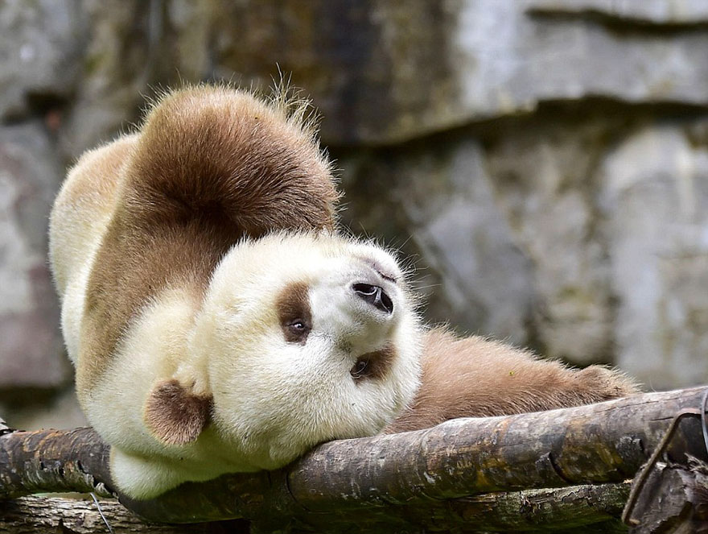

Home
About
contact
blog
the giant and red pandas
The different colors of pandas.
No other bear looks anything like that.
Pandas go from pink to white and black (or brown).
he name "giant panda" is sometimes used to distinguish it from the red panda
black and white panda
red panda
white panda

brown panda